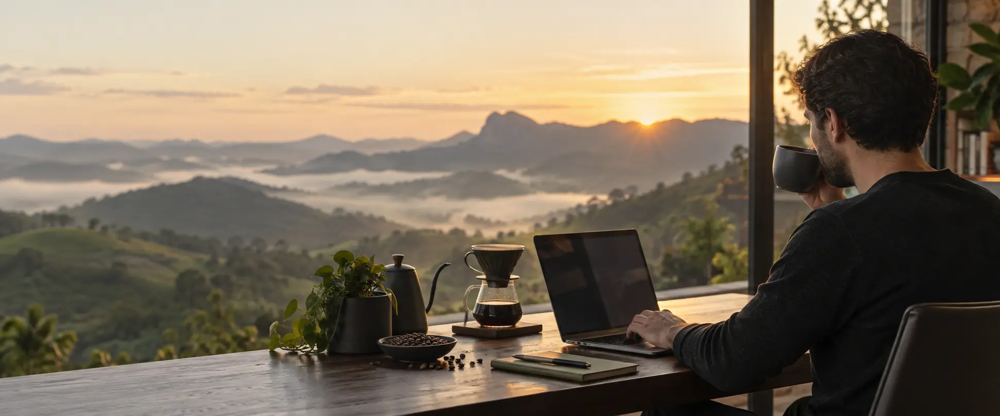
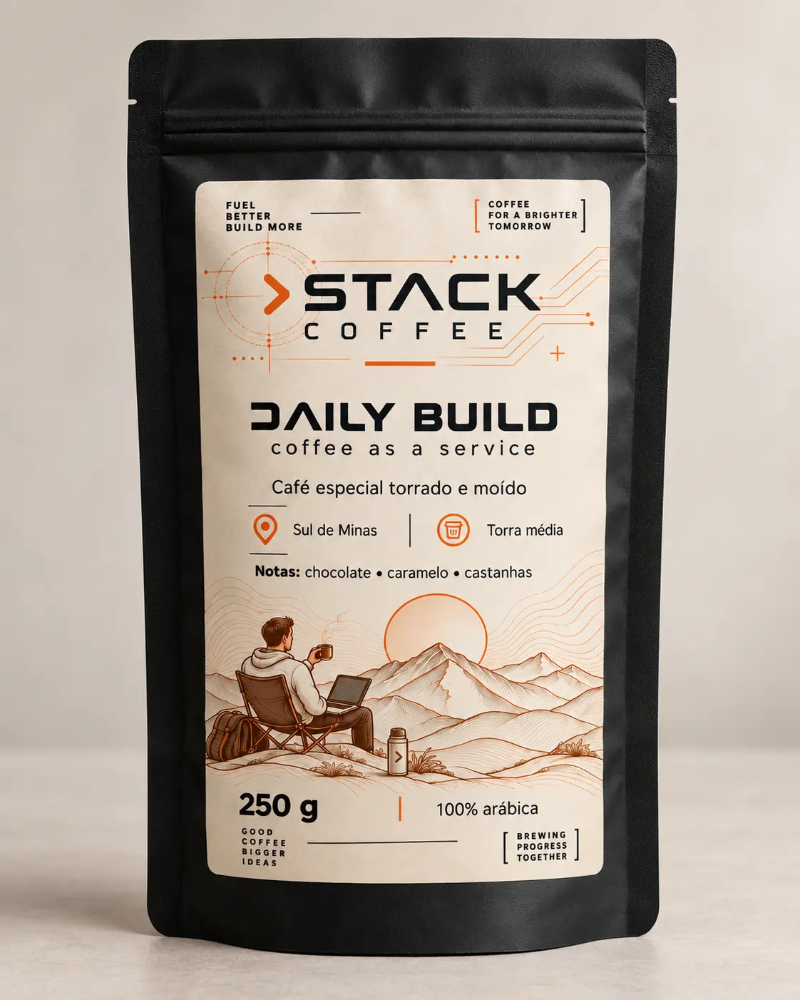
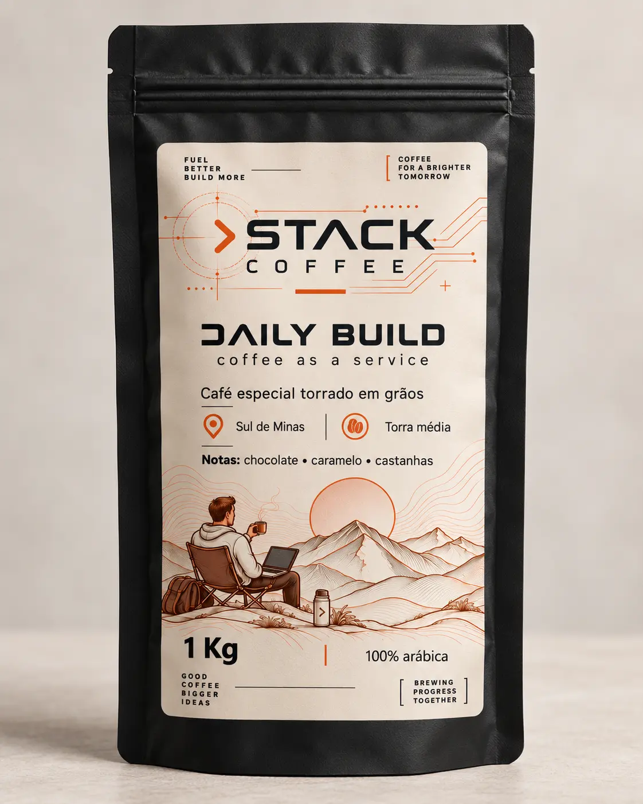

SPECIALTY COFFEE // BRAZIL
Café especial
do Sul de Minas.
Café para o que vem depois — feito para quem vive entre ideias, entregas e novos começos.
$ brew --release daily-build
DAILY
BUILD
O café que acompanha sua rotina sem roubar a cena.
Equilibrado, doce e encorpado. Uma torra média pensada para manter a clareza na primeira xícara e o ritmo até o último commit.
- ORIGEM
- Sul de Minas
- PROCESSO
- Natural
- TORRA
- Média
- NOTAS
- Chocolate, caramelo e castanhas
- FORMATOS
- 250 g moído / 1 kg em grãos


FRETE GRÁTIS 250 g // TORRADO E MOÍDO$ checkout --channel mercado-pago
DAILY BUILD
Escolha sua versão
Doce, encorpado e fácil de beber. Notas de chocolate, caramelo e castanhas para manter sua stack rodando do primeiro café ao último commit.
Pix, cartão ou boleto no ambiente seguro do Mercado Pago. Frete grátis para todo o Brasil.
COFFEE AS
A SERVICE.
Café especial recorrente para quem mantém a operação rodando.
Seu time enfrenta incidentes, entrega projetos, sustenta sistemas e transforma café em código. Esses guerreiros da TI — e todos os apaixonados por café — merecem uma xícara à altura.
Com a assinatura mensal Stack Coffee, sua empresa recebe cafés especiais com frequência e volume combinados diretamente com a gente.
FROM MINAS TO YOUR STACK
Antes do código,
existe a terra.
O Daily Build começa no pé de café, entre montanhas, tempo e cuidado. Do Sul de Minas para a sua rotina, respeitando quem cultiva, seleciona e transforma cada lote.
04 // QUEM ESTÁ POR TRÁS DA STACK
Eu vou até
a origem.
A Stack Coffee nasceu do encontro entre duas paixões: tecnologia e café. Sou profissional de TI há 20 anos, formado pela FIAP e pós-graduado pela PUC-Rio.
Apaixonado por café e amante de Minas Gerais, vou pessoalmente às fazendas conhecer produtores e buscar cafés com qualidade, história e procedência.